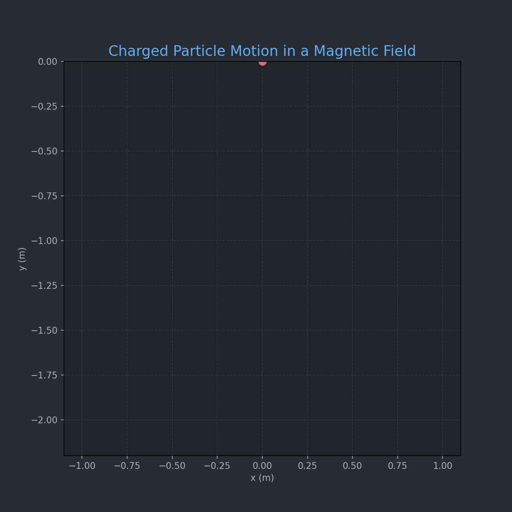

Problem 1
Simulating the Effects of the Lorentz Force
1. Introduction and Motivation
The Lorentz force governs the motion of charged particles in electromagnetic fields and is essential in understanding systems like:
- Particle accelerators – guiding and accelerating beams.
- Mass spectrometers – separating particles based on mass-to-charge ratio.
- Plasma confinement devices (e.g., tokamaks) – controlling plasma using magnetic fields.
Understanding the Lorentz force enables the design and analysis of such systems.
2. Lorentz Force Equation
The Lorentz force \(\vec{F}\) acting on a charged particle is given by:
Where:
- \(q\): Charge of the particle
- \(\vec{E}\): Electric field
- \(\vec{B}\): Magnetic field
- \(\vec{v}\): Particle velocity
Using Newton’s Second Law:
We obtain the equation of motion:
This equation is generally solved numerically due to the complexity of \(\vec{v} \times \vec{B}\).
3. Simulation Overview
We simulate particle trajectories using the 4th-order Runge-Kutta method for accuracy.
Scenarios Simulated:
1. Uniform magnetic field only: Circular motion.
2. Parallel \(\vec{E}\) and \(\vec{B}\): Helical motion.
3. Crossed fields: Drift motion.
Parameters that can be varied:
- Electric field strength \(\vec{E}\)
- Magnetic field strength \(\vec{B}\)
- Initial velocity \(\vec{v}_0\)
- Charge \(q\) and mass \(m\)

import numpy as np
import matplotlib.pyplot as plt
from matplotlib.animation import FuncAnimation, PillowWriter
from scipy.integrate import solve_ivp
from IPython.display import Image, display
# --- Constants ---
q = 1.0 # Charge (C)
m = 1.0 # Mass (kg)
E = np.array([0.0, 0.0, 0.0]) # Electric field (V/m)
B = np.array([0.0, 0.0, 1.0]) # Magnetic field (T)
# --- Initial Conditions ---
v0 = np.array([1.0, 0.0, 0.0]) # Velocity (m/s)
r0 = np.array([0.0, 0.0, 0.0]) # Position (m)
y0 = np.concatenate((r0, v0)) # Combine initial state
# --- Lorentz Force Function ---
def lorentz(t, y):
r = y[:3]
v = y[3:]
dvdt = (q / m) * (E + np.cross(v, B))
return np.concatenate((v, dvdt))
# --- Time Settings ---
t_span = (0, 10)
t_eval = np.linspace(t_span[0], t_span[1], 500)
sol = solve_ivp(lorentz, t_span, y0, t_eval=t_eval)
x, y = sol.y[0], sol.y[1] # only x and y components for 2D plot
z = sol.y[2] # z component (flat in circular motion)
# --- Set Up Plot ---
fig, ax = plt.subplots(figsize=(8, 8)) # Slightly larger figure
fig.patch.set_facecolor('#282C34') # Dark background for the figure
ax.set_facecolor('#21252B') # Dark background for the plot area
ax.set_xlim(np.min(x)*1.1, np.max(x)*1.1)
ax.set_ylim(np.min(y)*1.1, np.max(y)*1.1)
ax.set_xlabel("x (m)", color='#ABB2BF') # Light gray labels
ax.set_ylabel("y (m)", color='#ABB2BF')
ax.set_title("Charged Particle Motion in a Magnetic Field", color='#61AFEF', fontsize=16) # Blue title
ax.grid(True, linestyle='--', alpha=0.5, color='#3E4452') # Subtler grid
ax.tick_params(axis='x', colors='#ABB2BF') # Light gray ticks
ax.tick_params(axis='y', colors='#ABB2BF')
line, = ax.plot([], [], lw=2, color='#98C379', alpha=0.9) # Green-ish path
point, = ax.plot([], [], 'o', color='#E06C75', markersize=8, markeredgecolor='#E06C75') # Red point
# --- Init Function ---
def init():
line.set_data([], [])
point.set_data([], [])
return line, point
# --- Update Function ---
def update(i):
if i < len(x):
line.set_data(x[:i+1], y[:i+1])
point.set_data([x[i]], [y[i]])
return line, point
# --- Create Animation ---
ani = FuncAnimation(fig, update, frames=len(x), init_func=init, blit=False, interval=20)
# --- Save to GIF ---
gif_path = "charged_particle_motion_styled.gif" # New GIF name
writer = PillowWriter(fps=30)
ani.save(gif_path, writer=writer, dpi=150) # Higher DPI for better quality
plt.close()
# --- Display in Notebook (if using Jupyter/Colab) ---
display(Image(filename=gif_path))